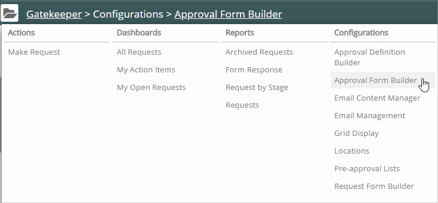
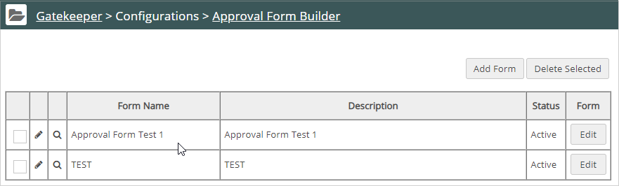
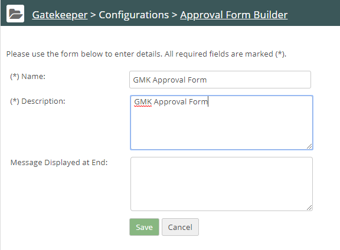

The Approval Form Builder works exactly the same as the Request Form Builder. You create a form and then edit the form, adding sections, questions and sub-questions.
Click the Gatekeeper Main menu. In the Gatekeeper Navigation panel, under Configurations, select Approval Form Builder.

The Approval Form Builder List displays including any forms you created previously.

To create a new form, click Add Form.
(Optional) To display a message to Gatekeeper approvers at the end of the approval form, enter text in the Message Displayed at End field.

sClick Save.
Your new form displays in the form list.
Note: By default, when you save the form, the form will be inactive. You must edit the form and create at least one question to make the form available for activation.